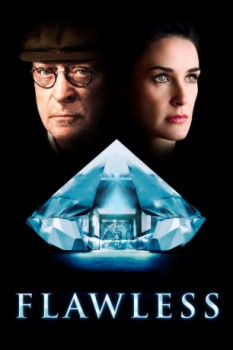

Flawless (2007)



País:Reino Unido, 108 minutos.
Idiomas:Inglés
GénerosPolicial, Drama, Suspenso
Director/es:Michael Radford
Guionistas:Edward Anderson
Códec de vídeo:Unknown
Número: 2654
TomatoMeter:

--

--
Clasificación IMDb:


6.7/10 (27.4K votos)
Certificación:
Argumento:
A female executive and a night janitor conspire to commit a daring diamond heist from their mutual employer, The London Diamond Corporation.
Reparto
Demi Moore (Como Laura Quinn), Michael Caine (Como Mr. Hobbs), Lambert Wilson (Como Finch), Nathaniel Parker (Como Ollie), Shaughan Seymour (Como Eaton)
Medio: Archivo de video,
Localización: D:\PELICULAS\ACTORES\Demi Moore\Flawless (2007)\Flawless.avi
Prestado: No
Rel. aspecto: Unknown